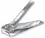
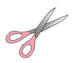
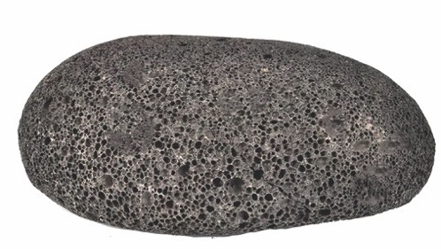
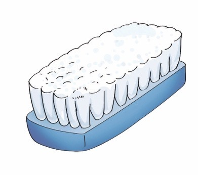
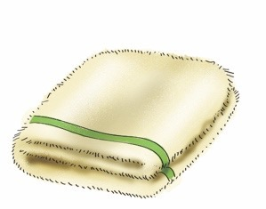
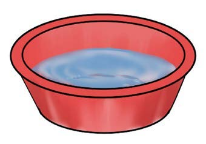
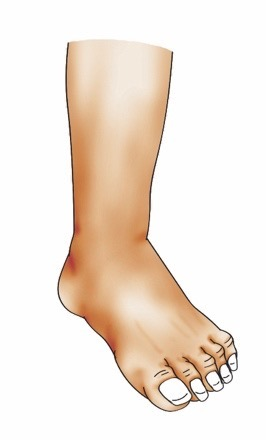
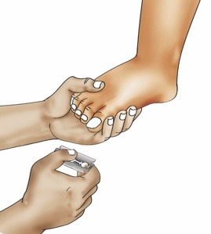
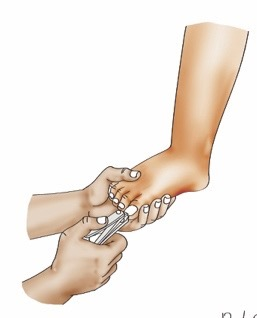
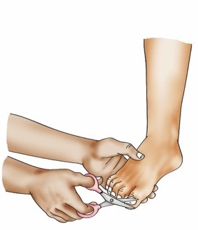

Page 23
I wash my feet and cut toenails.

I use these items to wash my feet and cut toenails.









Questions
1. Name the items used for cleaning the feet and cutting the toenails that you identified in pictures 1–6 or from the descriptions.
2. Mention other items used for washing feet and cutting
toenails that you know.
I cut and wash my toenails.

I cut and wash my toenails using different items.



